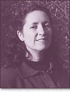

|
 Andrea Hollander Budyís first full-length collection of poems, House Without a Dreamer (Story Line Press, 1993, 1995), won the Nicholas Roerich Poetry Prize. Other awards include the WORDS Award in Poetry, the Porter Fund Award for Literary Excellence, and fellowships from the National Endowment for the Arts, the Arkansas Arts Council, and both the Wesleyan and Bread Loaf Writers' Conferences. Her poems and essays have appeared in such places as Poetry, Georgia Review, Hudson Review, Kenyon Review, Doubletake, Crazyhorse, Field, and Creative Nonfiction. Her second full-length collection, The Other Life, is forthcoming from Story Line in 2000. She lives in Mountain View, Arkansas, where she spent fifteen years as innkeeper of the Wildflower Bed & Breakfast. She is Writer-in-Residence at Lyon College, where in 1998 she was awarded the Lamar Williamson Prize for Excellence in Teaching. |